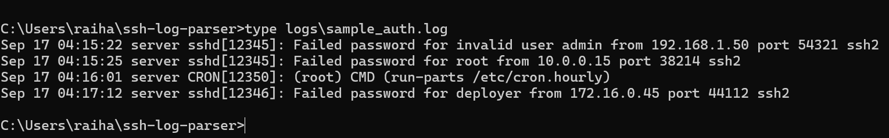
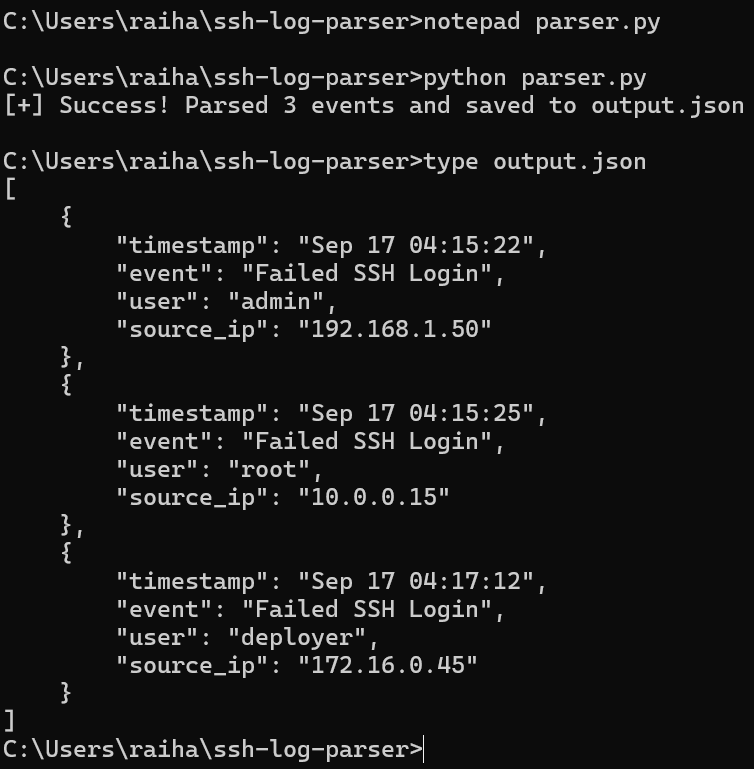

SSH Log Parser & Security Event Normalizer
A Python automation project that takes raw Linux SSH authentication logs, identifies failed login attempts, and converts them into structured JSON events that are easier to analyze.
01 // Overview
SSH authentication logs can contain useful security information, such as when a login attempt occurred, which username was targeted, and where the connection came from. The problem is that this information is stored as raw text rather than as structured fields.
I built this project to automate the first step of analyzing those logs. Instead of manually searching through each line, the Python script identifies failed SSH login attempts and extracts the pieces of information that matter.
The extracted data is then converted into JSON, creating a cleaner format that can be used for further analysis or passed into other security tooling.
02 // The Problem
A typical SSH authentication log contains many different events. A security analyst investigating failed logins may need to search through the raw text to find relevant entries and manually identify the username and source IP associated with each attempt.
For example, a raw entry might contain several pieces of information in a single line:
Sep 17 04:15:22 server sshd[1234]: Failed password for admin from 192.168.1.50 port 22 ssh2The useful security information is there, but it is embedded inside an unstructured sentence. The goal of this project is to turn that sentence into fields that a program can easily work with.
03 // How It Works
Read Logs
Python opens the SSH authentication log and processes it one line at a time.
Filter Events
The script looks for the
Failed password pattern to identify failed
SSH authentication attempts.
Extract Data
It extracts the timestamp, username, and source IP from each matching log entry.
Normalize
The extracted values are stored in a consistent structure and written to a JSON file.
04 // Raw Log Input
The parser starts with a sample SSH authentication log containing different login attempts. The script does not need to process every line because it is specifically looking for failed password events.

Sample SSH authentication log used as the input for the parser.
When the parser encounters a line containing
Failed password, it processes that line and extracts
the relevant fields.
05 // Python Implementation
The parser uses Python's built-in file handling, string manipulation, and JSON functionality. The main idea is simple: find the events we care about, pull out the useful fields, and save them in a structured format.
import json
# Define the input log and output JSON file
log_file_path = "logs\\sample_auth.log"
output_file_path = "output.json"
# Store parsed security events
parsed_logs = []
# Read the log file line by line
with open(log_file_path, "r") as file:
for line in file:
# Only process failed SSH login attempts
if "Failed password" in line:
# Split the log line into individual words
words = line.split()
# Extract the timestamp
timestamp = f"{words[0]} {words[1]} {words[2]}"
# Extract the username
if "invalid user" in line:
user = words[words.index("user") + 1]
else:
user = words[words.index("for") + 1]
# Extract the source IP address
ip = words[words.index("from") + 1]
# Create a structured security event
log_entry = {
"timestamp": timestamp,
"event": "Failed SSH Login",
"user": user,
"source_ip": ip
}
parsed_logs.append(log_entry)
# Write the structured events to JSON
with open(output_file_path, "w") as outfile:
json.dump(parsed_logs, outfile, indent=4)
print(f"[+] Success! Parsed {len(parsed_logs)} events and saved to {output_file_path}")
One detail I accounted for is the difference between a normal failed
login and an attempt against a username that does not exist. The
parser checks for invalid user and adjusts where it
looks for the username so both formats can be processed.
06 // Execution
After the parser processes the sample log, it reports how many
failed SSH events it found and saves the results to
output.json.

Terminal output showing the parser successfully processing the log file.
07 // Structured Output
Instead of leaving the information inside the original log line, the parser creates a structured event with separate fields for the timestamp, event type, username, and source IP address.
{
"timestamp": "Sep 17 04:15:22",
"event": "Failed SSH Login",
"user": "admin",
"source_ip": "192.168.1.50"
}
Structured JSON output generated from the raw SSH authentication logs.
08 // Security Relevance
Repeated failed SSH authentication attempts can be an important part of investigating unauthorized access or potential brute-force activity.
In a larger security environment, this type of parsing can serve as an early step in a telemetry pipeline. Raw logs are converted into structured events first, making the information easier for security tools and analysts to search, correlate, and investigate.
Raw SSH Log
↓
Python Parser
↓
Failed Login Detection
↓
Field Extraction
↓
Structured JSON
↓
Security Analysis / SIEM09 // What I Learned
- Learned how Python can automate repetitive security log analysis.
- Practiced reading files and processing log data line by line.
- Used string parsing to extract specific fields from unstructured data.
- Learned how raw security telemetry can be normalized into a structured format.
- Built a foundation for larger security automation and detection-engineering projects.